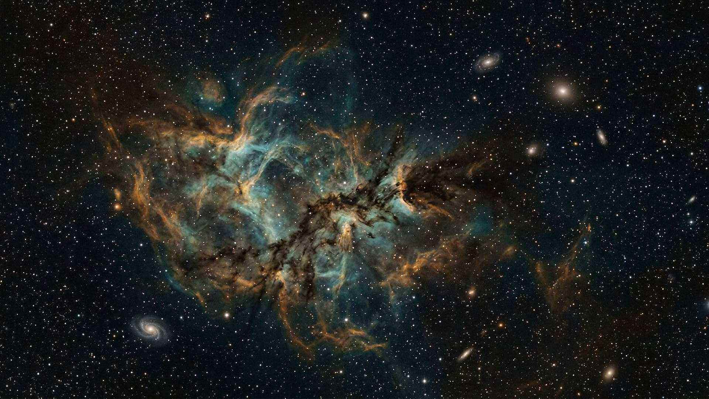
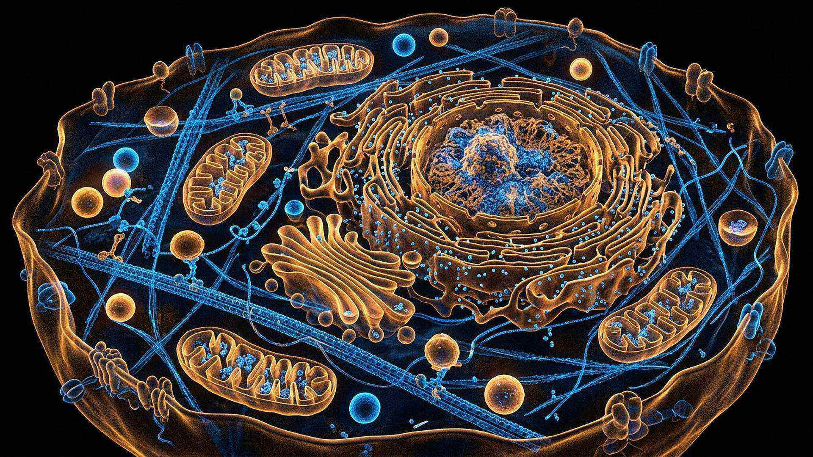
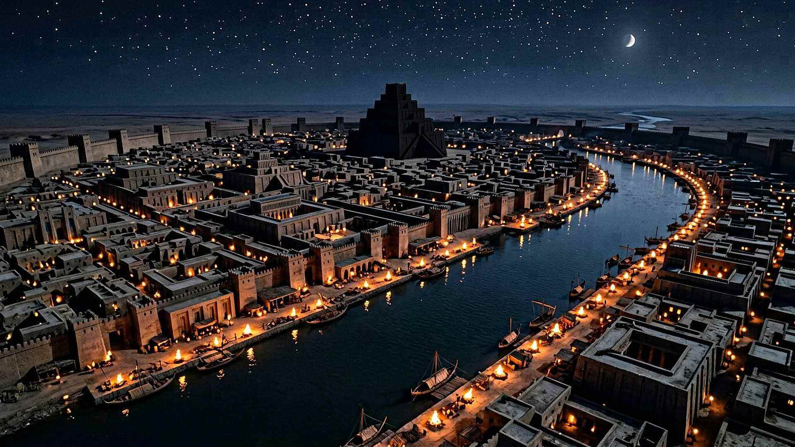

Le musée de l’empreinte
La création et les prophéties portent une empreinte
Deux livres, un même Auteur : l’univers que nous mesurons et la Bible que nous lisons. Ce site ne demande pas de croire : il présente des faits datés, des sources vérifiables, et les objections. À vous de peser.
« Ses qualités invisibles se voient clairement par les choses faites. »Romains 1:20
Le parcours en chiffres
Un musée qui tient debout sur ses sources
Chaque chiffre porte un identifiant de source : revue à comité de lecture, agence scientifique, fiche de musée. Chaque interprétation porte un badge. Rien n’est inventé, rien n’est caché.
Les six ailes
Un parcours, du plus grand au plus proche
Du cosmos à l’atome, de la cellule au cerveau, puis de Babylone à Jérusalem : l’empreinte se lit à toutes les échelles.
Le Cosmos
Le Législateur
La Terre
Le Bâtisseur bienveillant
Le Vivant
L’Ingénieur
L’Homme
« Merveilleusement fait »
Les Prophéties
Le Musée de la prescience
- 18 — Babylone : le conquérant nommé deux siècles à l’avance
- 19 — Tyr : les pierres jetées à la mer
- 20 — Ninive et les nations : la carte effacée
- 21 — Jérusalem, l’exil et les soixante-dix ans
- 22 — Daniel 2 : la marche des empires
- 23 — Daniel 11 : l’histoire écrite à l’avance
- 24 — Le Messie : plus de trente détails
- 25 — Les soixante-dix semaines : une date calculable
- 26 — Jérusalem, an 70 : Jésus avait prévenu
- 27 — Une science en avance sur son temps
- 28 — Le signe composite depuis 1914
- 29 — Ce qui vient : la prochaine page
Salles à ne pas manquer
Six portes d’entrée

Au commencement
L’univers a une histoire : il a commencé.

La cellule, une usine automatisée
Des moteurs rotatifs de dix nanomètres.
Le cerveau, l’objet le plus complexe connu
86 milliards de neurones, 20 watts.

Babylone : le conquérant nommé deux siècles à l’avance
Un nom propre dans une prophétie, 200 ans avant la naissance.
Tyr : les pierres jetées à la mer
Une ville insulaire devenue presqu’île.
Ce qui vient : la prochaine page
Une espérance, sans aucune date.
La pièce maîtresse
Babylone : le conquérant nommé deux siècles à l’avance
En octobre 539 av. n. è., l’armée de Cyrus entre dans Babylone. La chronique babylonienne précise que la ville est prise sans combat ; Hérodote et Xénophon décrivent le détournement de l’Euphrate et l’entrée nocturne. Cyrus promulgue ensuite un édit autorisant le retour des peuples déporté…
Avant de partir
Six manières de vérifier par vous-même
La frise du temps
Des jalons datés, de Job 26:7 à la reconstruction d’un millimètre cube de cortex humain en 2024, chacun avec sa source.
Les 136 pièces à conviction
Stèles, ostraca, sceaux, manuscrits, sources antiques et mesures publiées, avec le musée qui les conserve.
Le cabinet des merveilles
125 dossiers techniques en 8 galeries : une prouesse, deux mesures, une source, une application.
Le dossier messianique
53 textes classés par étape et par niveau de lecture, avec sept objections posées par nous.
La conclusion, à l’écoute
1 min 47 : ce que les trois séries de preuves disent ensemble, et la seule chose que ce musée demande.